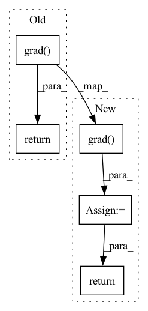

Pattern ID :31077

Before Change
fn_input.detach_()
args = (fn_input, sequence_input, linear_param0, linear_param1, bn_weight0, bn_bias0, bn_weight1, bn_bias1)
grad_out = ReversibleRNNFunction._forward_pass(*args)
return torch.autograd.grad(grad_out, args, grad_output) + (None,)
class RevRNN(torch.nn.Module):
After Change
args = (fn_input, sequence_input, linear_param0, linear_param1, bn_weight0, bn_bias0, bn_weight1, bn_bias1)
grad_out = ReversibleRNNFunction._forward_pass(*args)
grad_out.requires_grad_(True)
grad_out = torch.autograd.grad(grad_out, args, grad_output)
fn_input.detach_()
fn_input.requires_grad_(True)
if not ctx.top:
ctx.output_list.append(fn_input)
return grad_out + (None, None)
class RevRNN(torch.nn.Module):
In pattern: SUPERPATTERN
Frequency: 4
Non-data size: 5
Instances
Fragment ID: 91304241
Project Name: homebrewnlp/homebrewnlp
Commit Name: a0f0b4030e607ddb8baa74812668409814dc9a48
Time: 2020-07-13
Author: 39779310+ClashLuke@users.noreply.github.com
File Name: module.py
M Class Name: ReversibleRNNFunction
N Class Name: ReversibleRNNFunction
M Method Name: backward(2)
N Method Name: backward(2)
M Parent Class: torch.autograd.Function
N Parent Class: torch.autograd.Function
M File Name: module.py
N File Name: module.py
M Start Line: 50
M End Line: 58
N Start Line: 51
N End Line: 67
'>
Before Change
def gradlogP(self, z):
z_ = z.detach().requires_grad_()
logp = self.target.log_prob(z_)
return torch.autograd.grad(logp, z_, grad_outputs=torch.ones_like(logp))[0]
After Change
def gradlogP(self, z):
z_ = z.detach().requires_grad_()
logp = self.target.log_prob(z_)
grad = torch.autograd.grad(logp, z_, grad_outputs=torch.ones_like(logp))[0]
if self.max_abs_grad:
grad = torch.clamp(grad, max=self.max_abs_grad, min=-self.max_abs_grad)
return grad
'>
Fragment ID: 91304240
Project Name: vincentstimper/normalizing-flows
Commit Name: 972d22d8e60c8f2a7644d92471443437015752c3
Time: 2022-09-07
Author: l.midgley@instadeep.com
File Name: normflows/flows/stochastic.py
M Class Name: HamiltonianMonteCarlo
N Class Name: HamiltonianMonteCarlo
M Method Name: gradlogP(2)
N Method Name: gradlogP(2)
M Parent Class: Flow
N Parent Class: Flow
M File Name: normflows/flows/stochastic.py
N File Name: normflows/flows/stochastic.py
M Start Line: 103
M End Line: 103
N Start Line: 107
N End Line: 110
'>
Before Change
dummy = [torch.zeros_like(o, requires_grad=True) for o in outputs]
vjp = torch.autograd.grad(outputs, inputs, grad_outputs=dummy, **kwargs)
return torch.autograd.grad(vjp, dummy, grad_outputs=grad_inputs, **kwargs)
After Change
dummy_outputs = [torch.zeros_like(o, requires_grad=True) for o in outputs]
vjp = torch.autograd.grad(outputs, inputs, grad_outputs=dummy_outputs, **kwargs)
_jvp = torch.autograd.grad(vjp, dummy_outputs, grad_outputs=grad_inputs, **kwargs)
return convert_none_to_zeros(_jvp, dummy_outputs)
'>
Fragment ID: 91304243
Project Name: google-research/torchsde
Commit Name: 572dc57172ead17b376e19972a80661c6fd5eac8
Time: 2020-08-20
Author: 12689993+lxuechen@users.noreply.github.com
File Name: torchsde/_core/misc.py
M Class Name: AnonimousClass
N Class Name: AnonimousClass
M Method Name: jvp(3)
N Method Name: jvp(3)
M Parent Class:
N Parent Class:
M File Name: torchsde/_core/misc.py
N File Name: torchsde/_core/misc.py
M Start Line: 172
M End Line: 174
N Start Line: 117
N End Line: 120
'>
Before Change
if torch.is_tensor(inputs):
inputs = (inputs,)
_inputs = [torch.as_strided(input_, (), ()) for input_ in inputs]
return torch.autograd.grad(outputs, inputs, **kwargs)
def jvp(outputs, inputs, grad_inputs=None, **kwargs):
// `torch.autograd.functional.jvp` takes in `func` and requires re-evaluation.
After Change
inputs = (inputs,)
_dummy_inputs = [torch.as_strided(i, (), ()) for i in inputs]
_grad = torch.autograd.grad(outputs, inputs, **kwargs)
return convert_none_to_zeros(_grad, inputs)
def jvp(outputs, inputs, grad_inputs=None, **kwargs):
'>
Fragment ID: 91304244
Project Name: google-research/torchsde
Commit Name: 572dc57172ead17b376e19972a80661c6fd5eac8
Time: 2020-08-20
Author: 12689993+lxuechen@users.noreply.github.com
File Name: torchsde/_core/misc.py
M Class Name: AnonimousClass
N Class Name: AnonimousClass
M Method Name: grad(2)
N Method Name: grad(2)
M Parent Class:
N Parent Class:
M File Name: torchsde/_core/misc.py
N File Name: torchsde/_core/misc.py
M Start Line: 157
M End Line: 161
N Start Line: 100
N End Line: 106